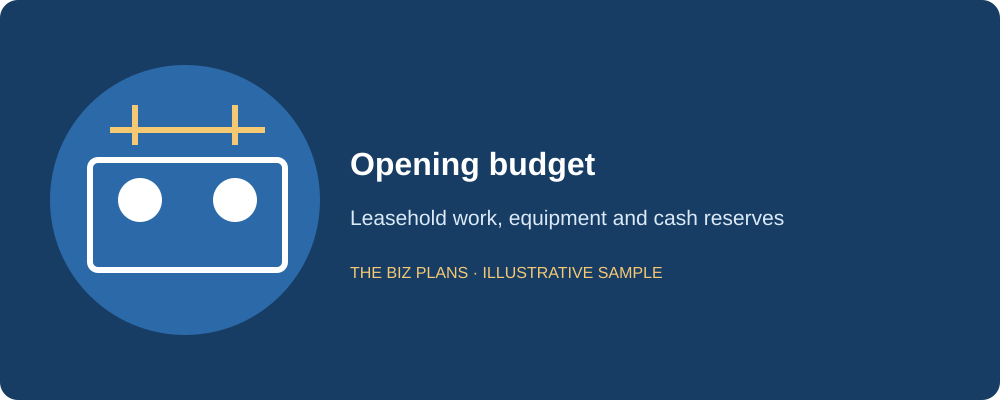
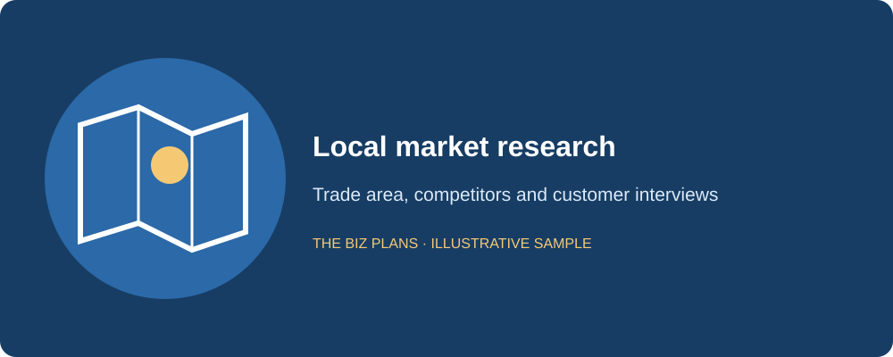
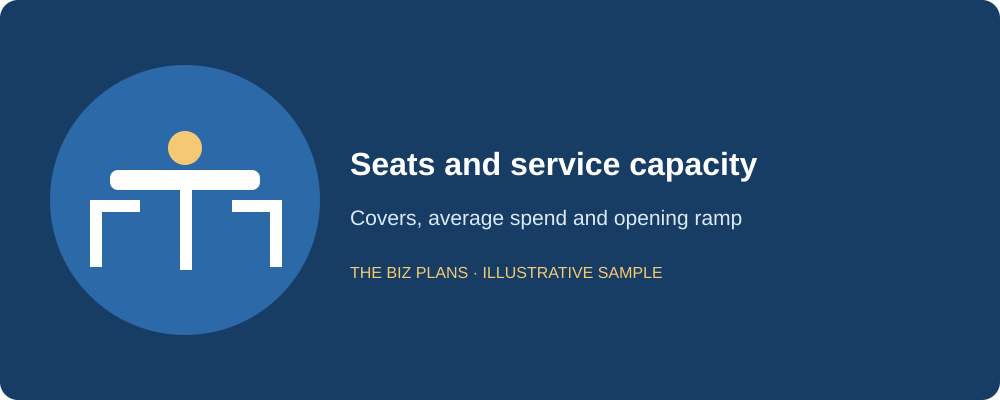
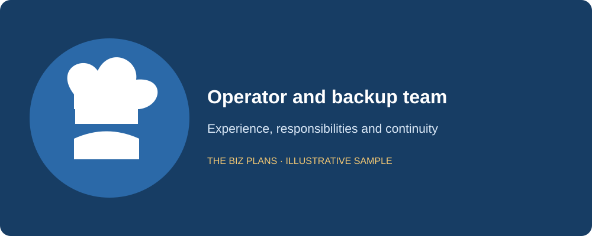
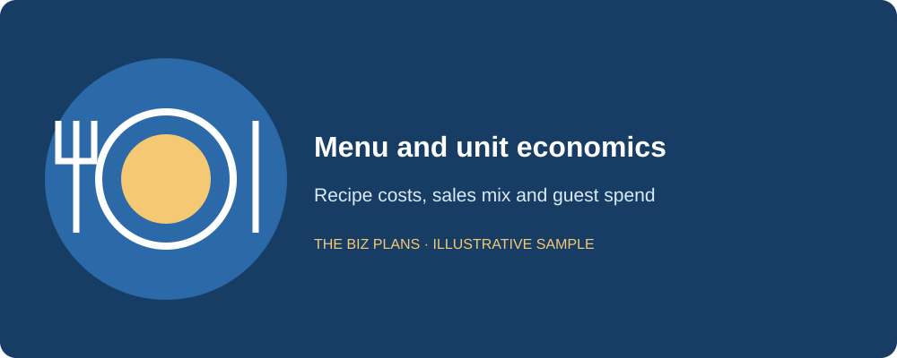
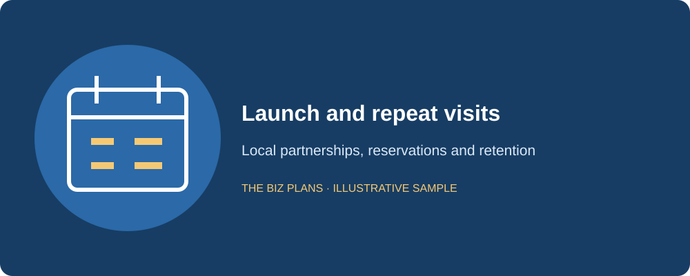
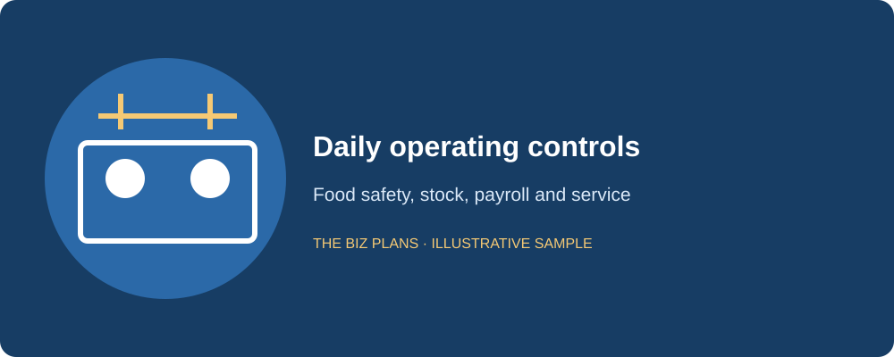
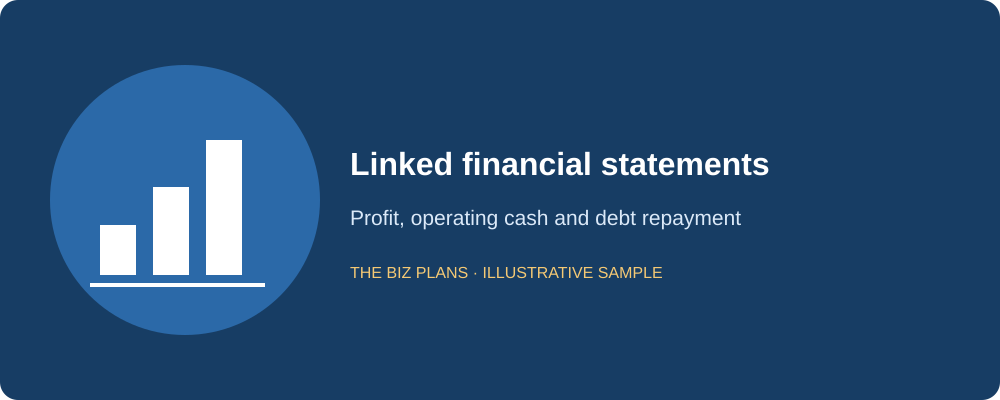

This restaurant business plan sample shows how Maple & Main Kitchen, a fictional 45-seat casual-dining restaurant in Toronto’s east end, could explain its concept, opening budget and repayment capacity to a lender. The menu centres on modern Canadian comfort food, and the fictional founder brings 12 years of kitchen experience. Read the sample text first, then the italic callouts explaining what a reviewer needs to verify.
Use this guide to connect the dining-room promise to the practical work behind it: securing a suitable lease, building a safe kitchen, hiring a dependable team and financing the months before repeat customers arrive. The example includes a restaurant business plan template checklist, an itemized startup budget, three linked annual financial statements and a funding request. It also separates the operator’s salary from business profit, because those are different sources of income. Replace the assumptions with your own quotations and local research before approaching a bank.
All company details and financial figures in this sample are illustrative examples showing plan structure — not market data, and not forecasts for any real business.
How to use this sample
- Read the annotations after each sample section; they explain the evidence a lender or investor will look for.
- Swap in your own numbers, supplier quotations, staffing schedule and neighbourhood research. Recalculate all linked statements when one assumption changes.
- Do not submit this fictional sample to a lender. Use professional business plan writing services to develop a plan based on your actual business.
Start with the lease and kitchen feasibility, rather than choosing an attractive sales target and working backwards. A premises inspection can reveal ventilation, electrical, accessibility or drainage work that changes the entire opening budget. Keep a dated assumptions register showing who supplied each quote, what it includes and when it expires. Your narrative and spreadsheet should use the same opening date, operating hours, menu mix and staffing pattern.
How much does it cost to open a restaurant in Canada?
For this fictional Toronto concept, the illustrative planning range is $280,000–$380,000, with a base-case opening budget of $340,000. This is a scenario range, not a Canadian market average. A fitted second-generation restaurant and a shell requiring a new commercial kitchen can have very different costs. Obtain site-specific contractor, equipment and insurance quotes before choosing a budget.
| Use of funds | Illustrative amount |
|---|---|
| Leasehold improvements | $100,000 (illustrative) |
| Commercial kitchen equipment | $75,000 (illustrative) |
| Furniture and fixtures | $25,000 (illustrative) |
| Point-of-sale system | $6,000 (illustrative) |
| Initial food and beverage inventory | $8,000 (illustrative) |
| Business licence, food-handler training and permit allowance | $4,000 (illustrative) |
| Liquor licensing and application support allowance | $5,000 (illustrative) |
| Launch marketing | $7,000 (illustrative) |
| Lease deposits and prepaid insurance | $10,000 (illustrative) |
| Working capital: rent and payroll float | $75,000 (illustrative) |
| Contingency | $25,000 (illustrative) |
| Total | $340,000 (illustrative) |
The illustrative working-capital allocation includes $24,000 for three months of rent and $51,000 for payroll float and operating liquidity. It is a cash reserve, not an additional expense booked on opening day. The contingency remains cash until a specific approved overrun requires it. Avoid spending both reserves on decorative upgrades: they are what lets the restaurant continue paying staff during a slower launch.
Compare new and used equipment by installed cost, warranty, energy use, service availability and inspection condition. A cheap used refrigerator that cannot maintain safe temperatures is an operating problem, not a saving. The liquor allowance is a budget assumption rather than a quoted regulator fee. Confirm current AGCO fees, eligibility, notice requirements and processing steps; do not assume approval arrives by a promised opening date. Build an alcohol-free launch case if licensing takes longer.

A lender looks for current quotations, a funded contingency and working capital that survives construction delays; a single rounded startup total is insufficient.
How much does a restaurant owner make?
There is no reliable owner-income answer without knowing the restaurant’s sales, debt, staffing and ownership structure. In this sample, the chef-owner’s illustrative gross salary is $60,000 annually and is already included in labour expense. The illustrative Year 1 net profit of $38,700 belongs to the company; it is not another salary payment and does not automatically become cash available for withdrawal.
Maple & Main assumes no owner dividends during the illustrative three-year forecast. Cash stays in the business to repay debt, replace equipment and protect payroll. An owner can therefore receive the planned salary while the company reports additional profit that remains invested. Personal take-home pay will also depend on tax and other circumstances. A real plan should explain the owner’s minimum personal income needs and test whether the restaurant can meet them during weak months.
If the operator works unpaid shifts to make the forecast appear profitable, show the economic cost of replacing that work. Banks need a sustainable operating model, including management coverage and a realistic wage budget. Do not treat tax collections, supplier credit or a line of credit as a source of personal drawings.
Sample executive summary
Maple & Main Kitchen will be a 45-seat casual-dining restaurant in Toronto’s east end, serving modern Canadian comfort food in a welcoming neighbourhood setting. I founded the concept after 12 years working in professional kitchens, including responsibility for purchasing, production schedules and shift supervision. Our promise is a dependable dinner experience: a focused seasonal menu, clear pricing and service that encourages guests to return with friends and family.
We will open for dinner six days a week, with a limited weekend lunch service developed only after the dinner operation is stable. Our initial customers are nearby residents, small groups and local employees seeking a relaxed sit-down meal. We will build awareness through neighbourhood partnerships, an accessible website, reservations and carefully measured introductory promotions. Takeaway will use the same core ingredients rather than require a separate production line.
The illustrative opening budget is $340,000, funded by a $220,000 term loan and $120,000 owner equity. Illustrative revenue is $950,000 in Year 1, $1,180,000 in Year 2 and $1,400,000 in Year 3. Food and labour assumptions are monitored weekly, and cash is retained during the ramp-up. Before committing to the premises, we will complete contractor inspections, confirm permitted use and negotiate lease protections. The sous-chef and floor manager will provide operating coverage if I am temporarily unavailable. Our repayment source is operating cash generated after payroll, suppliers and tax obligations, supported by monthly downside testing.
The reviewer wants a clear concept, a credible operator, a defined funding ask and a repayment story that agrees with the financial statements.
Sample market analysis
Our fictional trade area is a walkable east-end Toronto neighbourhood with residences, local workplaces and independent shops. We hypothesize that guests will choose Maple & Main for familiar food prepared carefully, comfortable seating and predictable service. These are assumptions to test, not claims about measured local demand. We will compare nearby casual restaurants, pubs, takeaway providers and the option of eating at home before setting the menu and hours.
Before signing the lease, I will map direct competitors within the proposed catchment, record menu prices and opening hours, visit at different service times and document observable strengths. Customer interviews will ask where people currently dine, how often they consider a sit-down meal and what would cause them to switch. We will distinguish residents’ answers from workers’ answers, since weekday and weekend demand may differ. The research log will preserve dates, questions, sample limitations and the implications for our plan.
Our opening forecast will use covers, spending per guest and service days rather than a claimed share of an undefined restaurant market. We will check walk-by activity through repeated observations, review accessible demographic information from Statistics Canada and assess planned construction or transit changes with City of Toronto sources. Any statistics added to the real plan must identify the dataset, geography, period and source. This sample makes no numerical claims about Toronto’s population, restaurant demand or industry growth.

A lender reads for evidence of demand and a reproducible research method; named competitors and dated observations are more useful than unsupported growth claims.
Turn local research into a financing plan
Develop a restaurant plan around your actual premises, operating experience and lender requirements.
Explore business plan servicesWhat makes a restaurant plan different?
Food cost, labour and prime cost. In this illustrative model, food cost is 30% of revenue and labour is 32%, giving an illustrative prime cost of 62%. These are management assumptions, not published industry benchmarks. Recipe costing, purchasing controls, waste logs and shift scheduling must explain how the ratios will be achieved. Labour includes the owner’s salary, employer costs and paid coverage; food cost includes the ingredients consumed, not simply invoices paid.
Lease exposure. The illustrative annual base rent is $96,000, or approximately 10.1% of illustrative Year 1 revenue before other occupancy costs. Review additional rent, permitted use, assignment clauses, renewal options, personal guarantees and restoration obligations with a lawyer. A ten-year lease without a workable exit can threaten a viable operator if the location disappoints. Identify what happens if financing, permits or landlord work are delayed, and avoid treating an unnegotiated lease condition as a guaranteed right.
Operator experience and key-person risk. My fictional experience is supported in the real plan by a résumé, references and examples of budgets or teams managed. We will document recipes, supplier contacts, passwords and closing procedures so operations do not depend on my memory. The sous-chef can run production and the floor manager can supervise service; emergency authority and appropriate insurance will be reviewed before launch.
Breakeven covers and ramp-up. Our illustrative service capacity is 45 seats × two turns × six dinner services, or 540 weekly covers. A planning ramp of 40%, 70% and 90% of that capacity across successive two-month periods is illustrative and must be validated. At an illustrative $46 average spend before HST, the six-month ramp generates about $430,560 over 26 weeks. Reaching illustrative Year 1 revenue of $950,000 then requires about $519,440 in the next 26 weeks: roughly 434 covers weekly, or 80.4% of this capacity. The monthly model must explain why the opening peak settles, including seasonality; the annual total alone cannot prove demand.
For a hospitality model driven by advance bookings, compare the event venue business plan sample and its treatment of capacity, deposits and event staffing.

Sample company description
Maple & Main Kitchen will operate through a fictional Ontario corporation owned by the chef-founder. The company will lease its premises rather than purchase real estate. The chosen site must support commercial cooking, safe deliveries, storage, waste collection and accessible guest circulation. We will proceed only after checking the lease, permitted use and equipment layout together; an appealing storefront is not sufficient evidence of suitability.
The business will maintain separate banking and bookkeeping records, written purchasing authority and a regular financial review. Before opening, we will confirm City of Toronto licensing and public-health requirements, food-handler coverage and fire and building approvals applicable to the premises. We will confirm WSIB registration and coverage obligations for our actual activities and staffing. Costs and deadlines will be entered in a permit register with an accountable owner.
The plan assumes taxable sales will exceed the CRA’s $30,000 GST/HST small-supplier threshold. CRA rules consider taxable revenues and the timing of exceeding the threshold, including associated persons where applicable; confirm the registration date with an accountant. HST collected from guests is not restaurant revenue. Maintain a separate remittance schedule and link to the CRA’s GST/HST registration guidance when checking the current rules.
The lender wants the actual borrower identified and evidence that the premises, permits, tax setup and insurance can support the proposed opening.
Sample organization and management
I will lead menu development, purchasing and kitchen performance. A sous-chef will supervise preparation and service when I am absent, while a floor manager will own reservations, service standards and daily cash reconciliation. Cooks, servers and support staff will be scheduled against expected covers rather than fixed at full opening capacity. Written role descriptions will make accountability clear without creating unnecessary layers of management.
The illustrative labour budget is $304,000 in Year 1, including the owner’s illustrative $60,000 salary. The hiring worksheet must reconcile wages, hours, employer contributions, vacation pay and coverage to that total. Training will include food safety, allergy communication, incident reporting and respectful workplace expectations. Staff availability will be checked before publishing service hours, and managers will review overtime and understaffing signals each week.
If I am incapacitated, the sous-chef will use documented recipes and approved suppliers while the floor manager manages opening and closing. A designated adviser will receive the authority needed for urgent payments under an agreed governance arrangement. We will test the backup procedure during an ordinary shift, because a written continuity plan is only useful if someone can execute it.

Lenders assess whether the team can deliver the forecast and whether the restaurant can function without the founder on every shift.
Sample menu, services and pricing
Our menu will offer modern Canadian comfort food: seasonal soup, roasted vegetables, a signature burger, a vegetarian main and a small selection of desserts. A compact menu lets us reuse ingredients across dishes, reduce spoilage and train staff consistently. Menu descriptions will make dietary information easy to discuss, while the kitchen maintains a clear allergy-handling process. We will not promise that any dish is free of cross-contact without appropriate controls.
The illustrative average guest spend of $46 before HST reflects a planned mix of mains, starters, desserts and beverages. It is a weighted sales assumption rather than the price of every meal. Our recipe sheets will show ingredient quantities, usable yields and purchase costs, and the sales mix will show why the illustrative food-cost target is attainable. Menu prices will be reviewed when supplier costs change; prices that look competitive can still lose money.
Takeaway orders will use packaging and dishes that preserve quality during travel. Any delivery-platform fees will be included in the channel contribution calculation before that channel is expanded. Weekend lunch, private groups and catering are optional growth opportunities, not unexplained revenue used to rescue the base forecast. We will evaluate them only when the team and equipment can support additional service without degrading dinner performance.

A lender looks for a priced offer with supportable margins, not a long menu disconnected from production capacity and purchasing costs.
Sample marketing and sales strategy
Our first marketing goal is repeat neighbourhood visits. We will create a mobile-friendly website with current menus, hours, location and reservation details, keep our business listings accurate and introduce the restaurant to nearby organizations. Preview services will test food and timing before a broader launch. The illustrative opening marketing allowance is $7,000, with recurring marketing included in the annual other-operating-expense budget.
We will record how guests heard about us, reservation conversion, repeat bookings and the contribution from promotions. A discount is useful only if it brings customers who return at an economically sustainable price. Partnerships with local businesses will be documented with a clear offer and measured outcome. We will request honest reviews, respond professionally and use recurring feedback to improve service rather than make unsupported popularity claims.
Monthly sales reviews will compare actual covers and spending against the forecast by service period. If weekday evenings trail the plan, we will test a limited offer or revised hours before increasing ad spend. Marketing decisions will consider kitchen capacity: filling the dining room beyond the team’s ability to serve it can damage retention. See the coffee shop sample for another example of linking local demand to service economics.

The reviewer wants a measurable customer-acquisition process whose costs and service capacity are included in the forecast.
Sample restaurant operations plan
We will open for dinner six days weekly and use scheduled preparation windows before service. Purchasing will follow approved supplier lists and minimum stock levels, with checks for receiving temperatures, expiry dates and invoice accuracy. Daily preparation sheets will translate expected covers into quantities, while waste logs will identify overproduction. The kitchen will maintain sanitation records, equipment-service schedules and clear responsibility for food-safety controls.
The floor manager will reconcile point-of-sale totals, card settlements, refunds and cash at closing. The bookkeeper will reconcile bank accounts and tax balances regularly, and I will review supplier payments and payroll before approval. Purchase orders above a defined limit will require separate review. Inventory counts will distinguish food consumed from stock held, so the income statement reflects usage while cash flow reflects payment timing.
The opening timetable will use decision gates: lease conditions satisfied, construction approved, equipment installed and tested, inspections completed, team trained and trial service passed. We will keep a delay scenario with continuing rent, revised payroll and reduced initial sales. Backup suppliers, equipment repair contacts and a reduced menu will help us continue safely through disruptions. Our monthly management pack will include food cost, labour, guest feedback, cash balance and upcoming debt service.

An underwriter reads for a repeatable operating system, a feasible opening sequence and a cash response to delays or equipment failure.
Illustrative three-year financial statements
Every amount and ratio in this financial example is illustrative. Amounts are CAD and revenue excludes HST. The annual tables summarize a simplified model; a real application needs monthly cash flow, a debt schedule, tax timing and explicit sales drivers. Year 1 revenue is $950,000, rising to $1,400,000 by Year 3. Food and labour remain at illustrative assumptions of 30% and 32% of sales. Other operating costs include utilities, insurance, repairs, marketing and administration.
| Line item | Year 1 (illustrative) | Year 2 (illustrative) | Year 3 (illustrative) |
|---|---|---|---|
| Revenue | $950,000 | $1,180,000 | $1,400,000 |
| Food cost | $285,000 | $354,000 | $420,000 |
| Labour, including owner salary | $304,000 | $377,600 | $448,000 |
| Rent | $96,000 | $99,000 | $102,000 |
| Other operating expenses | $170,000 | $190,000 | $210,000 |
| EBITDA | $95,000 | $159,400 | $220,000 |
| Depreciation | $30,000 | $30,000 | $30,000 |
| Operating profit | $65,000 | $129,400 | $190,000 |
| Interest | $22,000 | $18,000 | $14,000 |
| Profit before tax | $43,000 | $111,400 | $176,000 |
| Tax provision: assumed 10% | $4,300 | $11,140 | $17,600 |
| Net profit | $38,700 | $100,260 | $158,400 |
The illustrative 10% tax provision is a modelling simplification, not a statement of the applicable corporate tax rate. Confirm the business’s actual tax treatment with an accountant. Opening cash is illustratively $124,000: the working-capital and contingency reserves, launch allowance, licensing allowances and initial inventory funding. The illustrative opening balance sheet holds $206,000 in fixed assets and $10,000 in deposits and prepayments, funded by $220,000 debt and $120,000 equity. Initial inventory is purchased during Year 1 and included in the working-capital movement below; launch and licensing spending is included in other operating expenses.
| Line item | Year 1 (illustrative) | Year 2 (illustrative) | Year 3 (illustrative) |
|---|---|---|---|
| Net profit | $38,700 | $100,260 | $158,400 |
| Add back depreciation | $30,000 | $30,000 | $30,000 |
| Increase in inventory and other operating working capital | ($8,000) | ($4,000) | ($4,000) |
| Cash from operations, after interest and tax | $60,700 | $126,260 | $184,400 |
| Replacement capital expenditure | ($10,000) | ($15,000) | ($20,000) |
| Loan principal repaid | ($40,000) | ($40,000) | ($40,000) |
| Owner dividends | $0 | $0 | $0 |
| Net change in cash | $10,700 | $71,260 | $124,400 |
| Opening cash | $124,000 | $134,700 | $205,960 |
| Closing cash | $134,700 | $205,960 | $330,360 |
| Line item | Year 1 (illustrative) | Year 2 (illustrative) | Year 3 (illustrative) |
|---|---|---|---|
| Cash | $134,700 | $205,960 | $330,360 |
| Inventory and other net operating current assets | $8,000 | $12,000 | $16,000 |
| Deposits and prepayments | $10,000 | $10,000 | $10,000 |
| Net property and equipment | $186,000 | $171,000 | $161,000 |
| Total assets | $338,700 | $398,960 | $517,360 |
| Term debt: current portion | $40,000 | $40,000 | $40,000 |
| Term debt: long-term portion | $140,000 | $100,000 | $60,000 |
| Owner contributed capital | $120,000 | $120,000 | $120,000 |
| Retained earnings | $38,700 | $138,960 | $297,360 |
| Total liabilities and equity | $338,700 | $398,960 | $517,360 |
This simplified model assumes no unpaid supplier, payroll or tax balances at year-end; real statements must show those liabilities separately. It also assumes no receivables at year-end and keeps deposits constant. Card-settlement delays, HST remittances and supplier terms still need modelling within each month. High annual closing cash cannot prove the restaurant survives its weakest opening week.
An illustrative planning proxy for debt-service coverage is EBITDA less the tax provision, divided by interest plus principal. It produces approximately 1.46×, 2.56× and 3.75× across the illustrative years. A lender may use a different definition and adjust owner compensation, taxes or maintenance capital spending. After illustrative Year 1 replacement spending, the same proxy is about 1.30×. Ask for the lender’s covenant calculation and test it monthly and under lower sales; the figures here are not an approval threshold.

Profit does not repay a loan unless it becomes available cash; reconcile working capital, tax, replacement equipment and principal payments before asserting repayment capacity.
Draft your plan with your own inputs
Use the free AI business plan generator to organize your assumptions, then verify the research and financial model.
Open the free AI generatorSample funding request and repayment source
Ask: We request an illustrative $220,000 term loan alongside an illustrative $120,000 owner equity contribution. The owner funds will be evidenced before drawdown. The example assumes illustrative annual principal repayments of $40,000, with illustrative interest of $22,000, $18,000 and $14,000 in the first three years. These are modelling inputs, not a loan offer; a real schedule must reflect negotiated interest, amortization, fees and payment dates.
Use of funds: The combined illustrative $340,000 funds the startup-budget table, including premises improvements, kitchen equipment, furniture, launch requirements and operating reserves. Attach supplier quotations and show which invoices are paid by owner cash and which are financed. Keep an explicit reconciliation between the sources-and-uses table and the opening balance sheet. Discuss potentially eligible costs with the lender using the Canada Small Business Financing Program guide; do not assume all reserves or expenses qualify.
Repayment source: Restaurant operating cash after wages, suppliers, interest and taxes will fund principal payments. The illustrative Year 1 cash from operations of $60,700 covers illustrative principal of $40,000 and replacement equipment of $10,000, leaving $10,700 additional cash. We will preserve opening reserves and restrict owner distributions. A slower-sales case must quantify additional equity or cost actions rather than simply promise confidence. Review the bank loan business plan requirements with the chosen lender before finalizing the application.
Reviewers follow the sequence ask → use of funds → repayment source, then challenge whether the downside case still protects debt service.
Restaurant business plan template checklist
Use these ten sections as a restaurant business plan template. Each section should answer a decision question and point to the evidence behind the answer. Keep supporting documents in appendices so the main plan stays readable, and make sure the opening date, head count and forecast agree throughout.
- Executive summary: concept, operator, location, funding and repayment in one coherent overview.
- Company description: borrower, ownership, premises, permits, tax setup and launch milestones.
- Market analysis: trade area, competitors, customer research, dated sources and demand assumptions.
- Organization: experience, responsibilities, hiring, compensation and continuity coverage.
- Menu and services: recipes, prices, ingredient yields, sales mix and contribution by channel.
- Marketing and sales: reservations, launch activities, retention goals and measurable spending.
- Operations: service capacity, suppliers, food safety, staffing, inventory and opening gates.
- Startup costs and funding: quotations, owner contribution, loan ask and reconciled uses.
- Financial statements: income, cash flow, balance sheet, assumptions, debt schedule and downside cases.
- Risks and supporting documents: lease review, permits, résumés, quotes, insurance and contingency actions.
Before sending the plan, read it as a loan officer would: can every material figure be traced to an assumption, quote or calculation? Do covers fit the seats and hours? Does payroll fit the schedule? Are construction delays funded? Use the industry business plan hub and the food business planning guide for related considerations. The painting company sample and welding company sample show how the same structure changes with operational risk.
Restaurant business plan FAQs
Can I use this as a restaurant business plan template?
Yes. Use the headings, checklist and annotations as a structural template for your own restaurant business plan. Replace Maple & Main Kitchen’s fictional details and every illustrative figure with your actual location, operator experience, menu costs, staffing and supplier quotes. Rebuild the linked financial statements rather than changing only the revenue line. A template helps organize evidence; it does not supply that evidence. Before submission, check the lender’s requirements and have consequential lease, accounting or regulatory assumptions reviewed by an appropriate adviser.
How long should a restaurant business plan be for a bank loan?
Ask your bank for its current submission checklist before choosing a length. There is no universal page count that makes a restaurant plan acceptable. Write enough to explain the concept, operator, local demand, lease, opening costs and repayment capacity, with readable financial statements and assumptions. Put detailed quotes, résumés and permits in appendices. A concise plan with a traceable monthly forecast is more useful than a lengthy narrative that leaves the lender guessing about covers, payroll or working capital.
Do I need a business plan for a restaurant loan in Canada?
A lender financing a restaurant startup will commonly request a business plan and projections, but the exact documents depend on the institution, product and borrower. Confirm the requirements before applying, including those for any proposed CSBFP financing. Prepare the ownership details, equity evidence, lease information, cost quotations and repayment case alongside the narrative. Existing restaurants may also need historical statements. A completed plan supports the assessment; it does not replace credit review, security requirements or the lender’s own application forms.
What financial statements do lenders want?
Confirm the lender’s forecast period and format. A restaurant application commonly includes projected income statements, cash flow statements and balance sheets, supported by startup costs, sources and uses, assumptions and a debt schedule. Monthly cash flow is especially useful during construction and opening because annual profits can hide a cash shortfall. Show HST timing, payroll, supplier terms and owner compensation consistently. Existing businesses should also provide the historical records requested. All statements should reconcile and explain their assumptions in plain language.
How do I show breakeven in the plan?
Separate costs that vary with each sale from costs that remain payable regardless of covers. Divide fixed operating costs by the contribution-margin percentage to estimate operating breakeven sales, then divide by average spending per guest to estimate covers. Check those covers against seats, turns and service days. Treat labour carefully because some shifts are fixed while others flex with demand. Show a separate cash breakeven that includes principal payments and necessary equipment spending, and test a slower opening ramp.
Does a plan guarantee financing?
No. A restaurant business plan explains the opportunity and repayment case, but the lender makes its own decision. Credit history, owner equity, security, operator experience, lease exposure and demonstrated cash flow can all affect the outcome. A strong narrative cannot compensate for unsupported sales assumptions or insufficient funds to complete construction. Ask the lender what conditions remain outstanding, revise the forecast when quotations change and preserve a downside case. Avoid anyone who promises approval simply because a plan has been written.
Where can I get professional help with a restaurant business plan?
The Biz Plans offers professional business plan writing and financial modelling for Canadian startups and small businesses. Bring your proposed lease, menu, equipment quotations, owner résumé, available equity and financing goal so the scope can reflect the actual restaurant. Atul Jagga, CPA Ontario, leads the practice from Toronto. Review the business plan services page, then contact the team to discuss research, financial modelling and lender requirements. Professional help improves preparation and clarity; the lender still decides whether to finance the business.
About the author

Written by Atul Jagga, CPA Ontario — Founder of The Biz Plans, Toronto. MBA Finance & Strategy (UBC); 20+ years in corporate finance and consulting involving RBC, BMO, and CIBC. Since 2016, Atul has written bank-financing and investor business plans for Canadian startups and small businesses.
Build a restaurant plan you can explain
Discuss your premises, opening budget and financing goal with The Biz Plans.
Contact The Biz PlansUse this sample as a guide to structure; for research and projections based on your own business, explore our business plan writing services. We confirm the deliverables and scope before work begins.